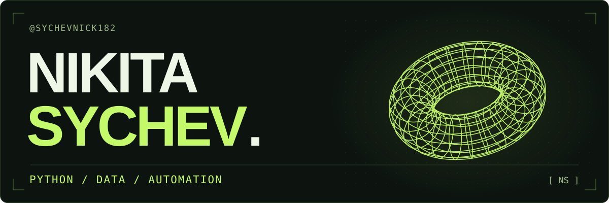

sychevnick182 / README.md

Привет, я Никита.
Разрабатываю на Python: веб-сервисы, API, ботов и интеграции. Работаю с данными и автоматизирую рутину.
• Backend — FastAPI, Django, REST и интеграции между сервисами.
• Данные — SQL, PostgreSQL, анализ и применение нейросетей.
• Frontend — создаю интерфейсы с помощью AI.
Стек
Этот аккаунт — дублёр моего профиля nikita-sychev182 на GitHub. Здесь размещены перенесённые копии моих репозиториев.